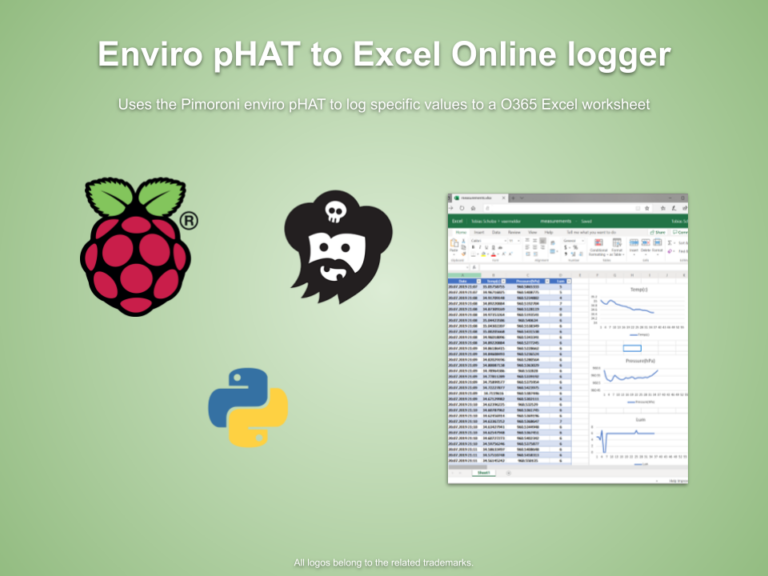

Raspberry Pi mit dem Enviro HAT das Raumklima in Excel visualisieren
Was Google kann
Vor einigen Monaten habe ich etwas vergleichbares schon für Google Docs gebaut. Siehe das GitHub Repostiory python-enviro-gdocs-logger.
Nun wollte ich einmal sehen ob sich dieses Szenario auch auf das Microsoft-Ökosystem übertragen lässt.

Microsoft Graph API und Azure Active Directory Hierzu muss man (mittlerweile) die Microsoft Graph API nutzen welche einen im Azure Active Directory hinterlegten Token zum funktionieren benötigt. Dies wiederrum heißt: Das Skript können nur Inhaber eines Work- oder School O365-Accounts nutzen. Schade.
Einfacher, immer wiederkehrender Ablauf
Der eigentliche Prozess ist simpel. Durch über die API des Pimoroni Enviro pHATs bereitgestellten Klimamesswerte werden neue Zeilen via der Graph API in einem vorher definierten Excel Sheet in OneDrive hinzugefügt.
Anhand dieser Werte werden dann durch Excel diverse Diagramm gezeichnet um die puren Messwerte für das menschliche Auge besser visuell darzustellen.

Dies geschieht im Standardfall alle Viertelstunde einmal. Wobei ich allerdings keine Aussage zu einbem Graph-API Zugriffslimit seitens Microsoft finden konnte. So könnte man wohl öfter den Timer “ticken” lassen.
Quelltext
Die mit vielen Kommentaren versehenen Quelltexte zur App liegen wie immer auf meinem GitHub Profil im Repository python-enviro-excel-online-logger. Als auch als Hackster.io Projekt zu finden.
Mehr bei Dr. Windows
Einen längeren Artikel hierzu findet ihr in meinem zweiten Gast-Beitrag bei Dr. Windows.